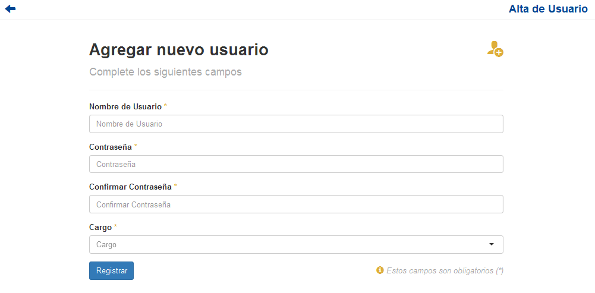

Agregar Usuario¶
Si el usuario desea crear un nuevo Usuario, deberá presionar el sub-item Agregar Usuario.
A continuación el sistema lo redirigirá a la siguiente pantalla:
En esta parte el usuario se le presentará un formulario y deberá ingresar los datos solicitados para dar de alta un nuevo Usuario.
Atención
El sistema siempre validará que la información ingresada sea correcta. En caso de que los datos ingresados sean incorrectos el sistema lo informará. En este punto, las posibles causas de errores son:
- Uno o más campos vacíos.
- Uno o más campos con un formato incorrecto.
- El nombre de usuario ya existe.
- Las contraseñas no coinciden.
Una vez completado el formulario, el usuario tendrá que presionar el boton Registrar y el sistema se encargará de dar de alta el nuevo usuario.